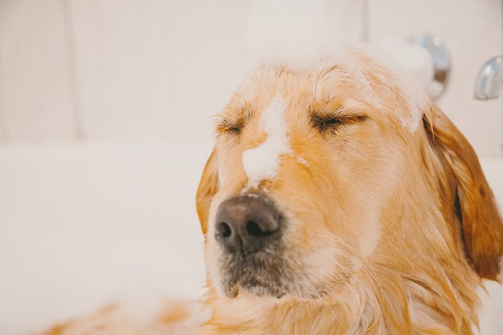
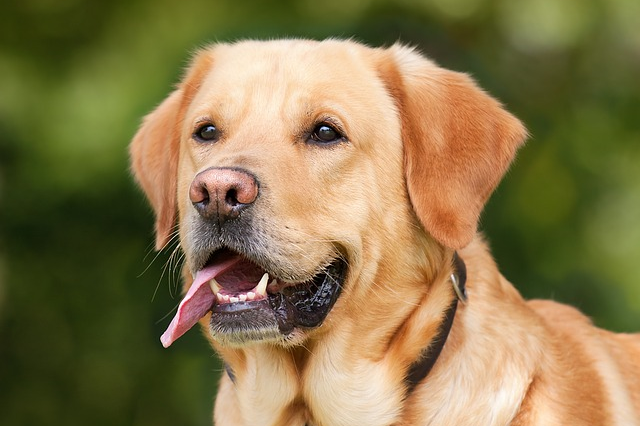
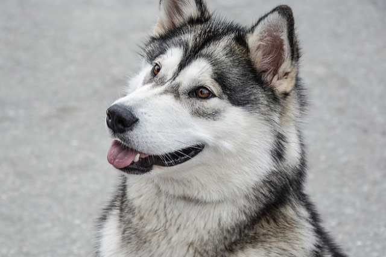

Banho

Manter o seu pet bem-higienizado é essencial para o bem-estar dele, por isso. os banhos regulares são essenciais.
Mas pode ser que você ainda tenha algumas dúvidas sobre como dar banho em cachorro.
O tipo de shampoo, melhor processo e técnicas a serem utilizadas são alguns cuidados que devem ser levados em conta.
- Começando por
- 1- Umidecendo os pelos
- 2- Passando shampoo
- 3- Enxáguando com bastante água
- 4- Passando condicionador
- 5- Enxáguando novamente com bastante água
- 6- Secar os pelos
- 7- Escovar os pelos
- 8- Por último passar perfume
Tomar os cuidados necessarios com seu animalzinho é muito importante tanto para os odores quanto para
prevençando de pulgas, doenças, carrapatos e muito mais, portanto sempre dê uma atenção a mais
para seu animalzinho
Tosa estética

A tosa estética é aquela feita para realizar a manutenção da aparência do cachorro.
Frequentemente acontece para enquadrá-lo nos padrões de sua raça de forma efetiva.
Tosa de máquina

Quando um humano pede ao cabeleireiro um corte o mais rente possível à cabeça, é comum que ele seja feito com uma máquina. Dessa forma, é possível determinar o tamanho do fio.
Assim também é com a tosa de máquina feita nos cachorros. As lâminas usadas definem o tamanho do pelo do animal.
Tosa de tesoura

Este tipo de tosa de cachorro é feito para ajudar no acabamento das tosas em geral.
Ela é usada para afinar e polir detalhes, mantendo ao máximo os padrões estabelecidos para aquele tipo de animal.
Portanto, requer o máximo de técnica, cuidado e atenção e costuma ser demorada.
A tosa de tesoura também é usada nos cães que têm medo do barulho das máquinas.
Tosa de raça

A tosa de raça é feita de forma similar à tosa estética, pois se propõe a manter o cachorro no padrão esperado para seu tipo de raça.
É mais comumente feita em poodles, Schnauzer e Yorkshires, por exemplo.